## Careers in Digital Fabrication
Profiles of people in my network working across design, fabrication, research, and engineering.
<!-- ## Quick Links
- Ian Palk
- Alyssa Suh
- Bobby McCarthy
- [Gabriella Perry (FIGUR)](#gabriella-perry)
- [Joonhaeng Lee (FIGUR)](#joonhaeng-lee)
- [Ted Sirota (RAI Institute)](#ted-sirota)
- [Sunny Yoo (Vibram)](#sunny-yoo)
- [Christine Gregg (NASA)](#christine-gregg-nasa)
- [Andy Whitman (Seaport Systems)](#andy-whitman-seaport-systems)
- [Saeed Arida (NuVu / NuVuX)](#saeed-arida-nuvu--nuvux)
- [Fabian Almazan (Biophilia Records)](#fabian-almazan-biophilia-records)
- [Ariel Wang (Stanford/Tesla)](#ariel-wang-tesla)
- [Chris Zhu](#chris-zhu)
- [Betsy & Mike Jasper (Tarkka)](#betsy--mike-jasper-tarkka)
- [Leo McElroy](#leo-mcelroy) -->
---
## [Ian Palk](https://ianp7.github.io/PS70_Spring2025/index.html)
**Earth Science / Environmental Engineering**
After taking PS70 my senior spring and studying Earth and Planetary Sciences at Harvard, I began a PhD at Trinity College doing ecology and environmental engineering, specifically focusing on soil carbon fluxes. However, I quickly realized that many of the sensors I need to successfully and rigorously tackle this question either do not exist at all or are extortionately expensive, so I have dedicated the first year of my PhD to building them myself. Without taking any other formal engineering classes, I have designed, built, and installed a fleet of novel instruments called automated minirhizotrons that will be patented and possibly taken to enterprise, in addition to being a significant contribution to the field of ecology. I'm now working on cheaper, open-source equivalents to preexisting, commercial environmental sensors to help democratize environmental research and further my PhD. At least 1 of the 3 chapters of my PhD will be a dedicated engineering paper introducing a bespoke sensor network for monitoring plant belowground carbon allocations, including a method of using radio and/or WiFi to acquire data in real time. PS70 taught me not only the fundamentals necessary to succeed in this role, but also equipped me with the confidence and skills to teach myself what I didn’t already know!
<div class="grid">
<figure class="ph"><p>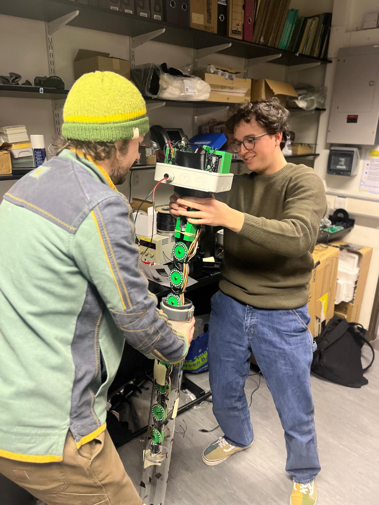</p></figure>
<figure class="ph"><p>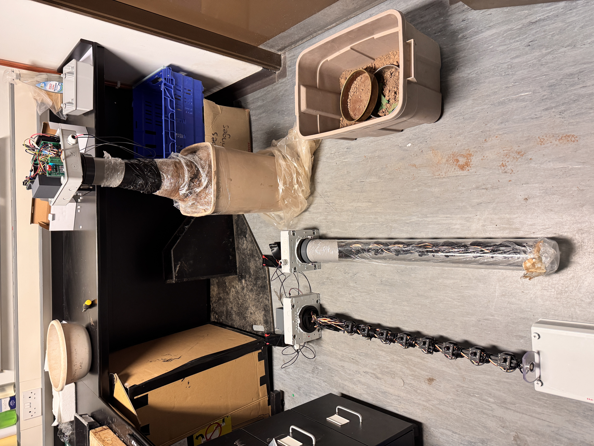</p></figure>
<figure class="ph"><p>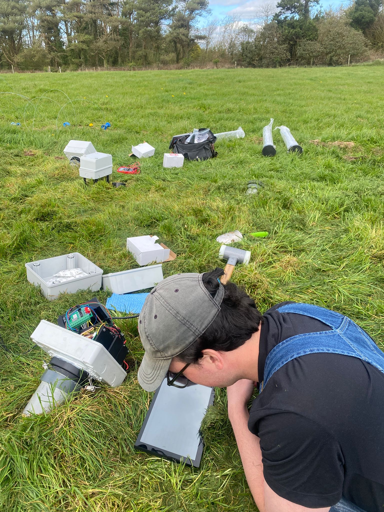</p></figure>
<figure class="ph"><p>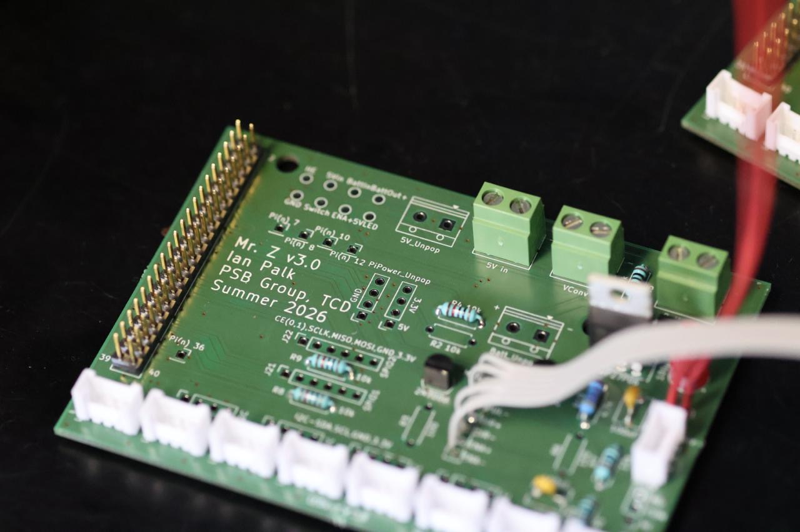</p></figure>
</div>
---
## [Gabby Perry](https://www.linkedin.com/in/gabriella-perry-62586b133)
**Designer / Researcher**
**Focus:** computational design, fiber arts, embedded interaction
Gabriella Perry is a computational designer at [FIGUR](https://figur.io/) who graduated from Harvard Graduate School of Design. Her work spans computational design, physical mechanisms, and soft materials, including explorations in crochet/knitting machines and embedded/wearable projects using laser cutting, molding/casting, electronics, and programming.
- Researched and prototyped a small crochet machine to automate textile production.
- Built embedded/wearable devices mixing sensors, microcontrollers, and custom enclosures.
<div class="grid">
<figure class="ph"><p>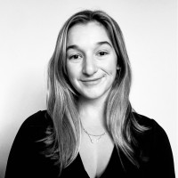</p></figure>
<figure class="ph"><p>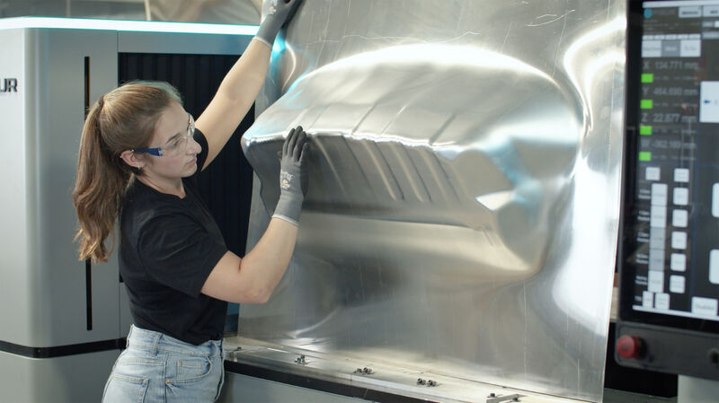</p></figure>
<figure class="ph"><p>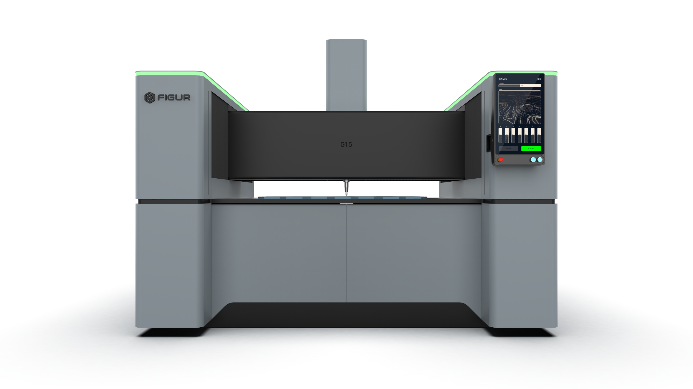</p></figure>
</div>
---
## Joonhaeng Lee
**Computational Designer / Maker / Educator**
**Focus:** machines-that-make, paper folding, parametric workflows
Joonhaeng Lee is a Master of Design Studies student at Harvard Graduate School of Design who began his machine-making journey at GSD and MIT. He has pursued projects such as a simple folding machine for HTMAA, a paper-folded walking robot, and a DIY brake machine for paper folding. Before GSD, he worked as a BIM Consultant at Syntegrate, creating Grasshopper scripts and Catia models for projects like the Louis Vuitton Flagship Store and Mount Fuji Heritage Center.
- Designed and built a paper-folding machine as a final project, exploring automated paper folding.
- Documented full-stack digital fabrication: CAD/CAM, electronics production, embedded programming.
<div class="grid">
<figure class="ph"><p>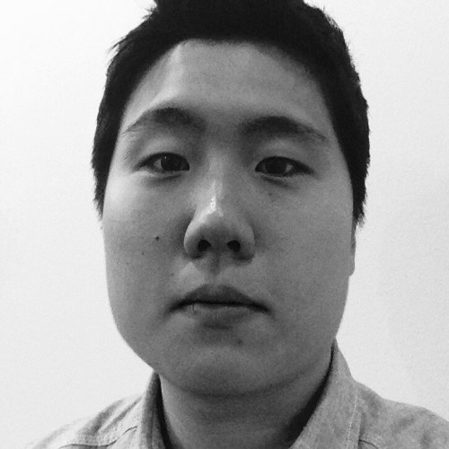</p></figure>
<figure class="ph"><img src="https://encrypted-tbn0.gstatic.com/images?q=tbn:ANd9GcTrqxsm7xhYYdsF52QYgVEjZubEQqQYTEUYJg&s" alt="Mechanism placeholder"></figure>
<figure class="ph"><p>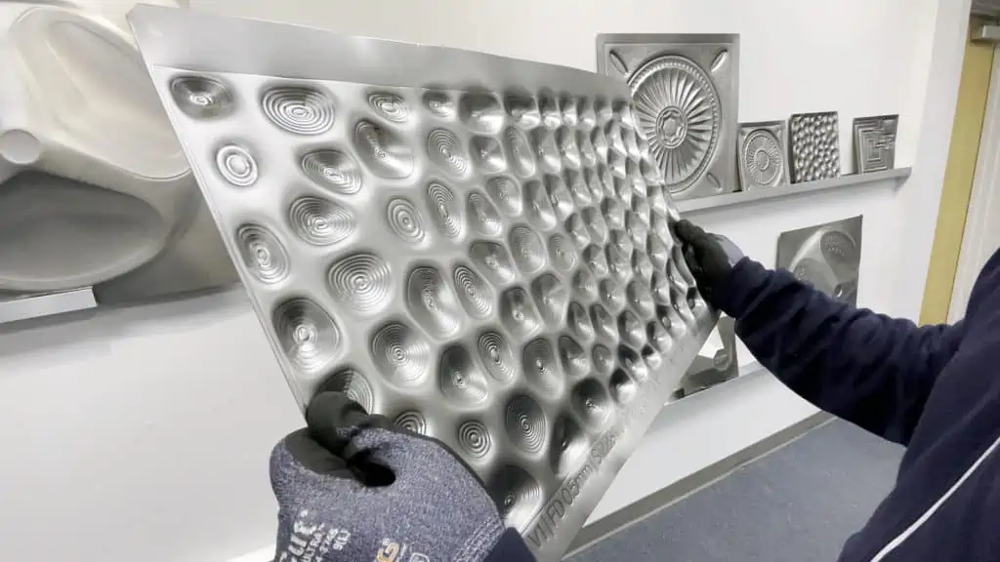</p></figure>
<figure class="ph"><p>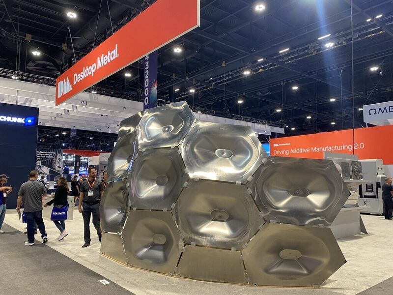</p></figure>
</div>
---
## [Ted Sirota](https://www.linkedin.com/in/tedsirota)
**Engineer, [RAI Institute](https://rai-inst.com/)**
**Focus:** additive manufacturing operations, prototyping workflows
Ted Sirota studied Mechanical and Electrical Engineering at Boston University before moving into makerspace advising and prototype engineering. He previously manages the Harvard SEAS 3D Printing Core, overseeing printers, materials, scheduling, and quality assurance for academic and research needs. Prior to that, he served as a 3D Printing Specialist at the Wyss Institute for Biologically Inspired Engineering.
<!-- <div class="grid">
<figure class="ph"></figure>
</div> -->
---
## [Sunny Yoo (Vibram)](https://www.cobblersunny.com/about)
**Designer / Maker / Shoemaker (CobblerSunny / InnovationSunny)**
**Focus:** footwear repair and design, material craft, fabrication for shoes
With more than 15 years devoted to the art of shoemaking and repair, Sunny has built a career rooted in craftsmanship, precision, and a passion for preserving the integrity of footwear. As an Innovation Shoemaker at Vibram, he merges time-honored cobbling techniques with modern advancements, collaborating with experts to explore new possibilities in footwear design and performance. Before joining Vibram, he was Manufacturing Manager at Made+, a start-up footwear brand in Annapolis, MD, where he was directly involved in building and manufacturing USA-made shoes.
<div class="grid">
<figure class="ph"><p>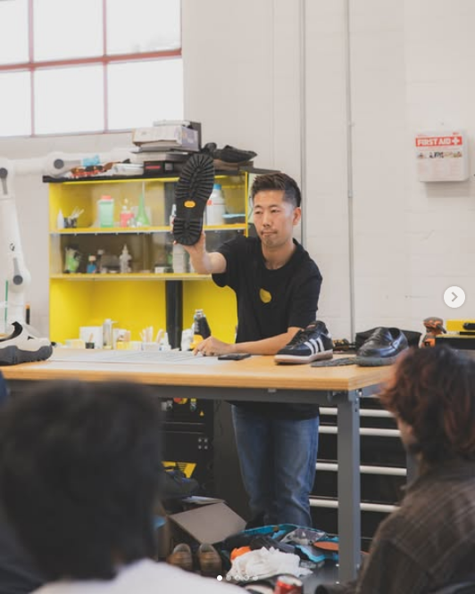</p></figure>
<figure class="ph"><p>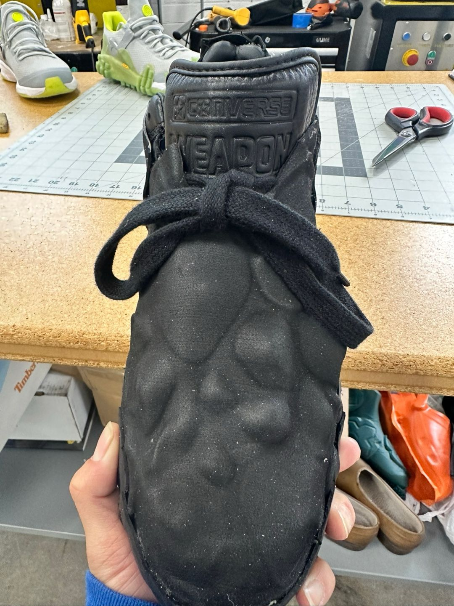</p></figure>
<figure class="ph"><p>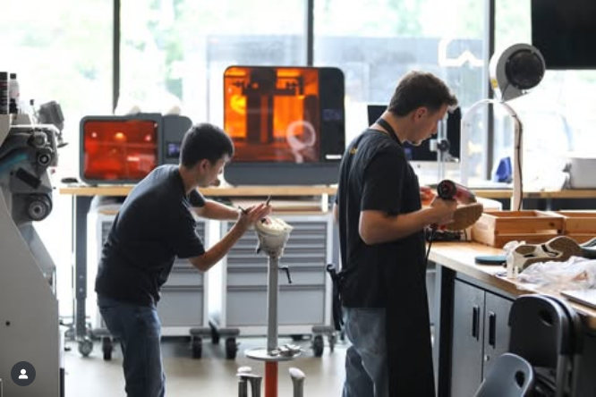</p></figure>
</div>
---
<!-- ## Christine Gregg (NASA)
**Research Engineer, NASA Ames Research Center**
**Focus:** digital materials, autonomous construction, modular robots
Christine Gregg holds a Ph.D. in Mechanical Engineering from the University of California, Berkeley, and works as a research engineer at NASA Ames Research Center. Her interests include advanced manufacturing, ultra-light structures, autonomous systems, robotics, metamaterials, and in-space assembly. She contributes to projects like ARMADAS/MMIC-I, where robots assemble modular digital materials for space structures.
-->
<!-- **Gallery**
<div class="grid">
<figure class="ph"><img src="https://www.researchgate.net/figure/Frame-of-the-video-that-displays-the-first-lens-that-was-fabricated-in-outer-space_fig1_396223168" alt="Frame of the video that displays the first lens that was fabricated in outer space"></figure>
<figure class="ph"><img src="https://www.researchgate.net/figure/a-An-assembled-cuboctahedral-lattice-specimen-made-from-b-Ultem-2200-20-glass-fiber_fig1_325135273" alt="An assembled cuboctahedral lattice specimen made from Ultem 2200 20 glass fiber"></figure>
<figure class="ph"><img src="https://www.researchgate.net/figure/njection-Molded-lattices-achieve-the-same-regime-of-behavior-as-other-ultra-light_fig2_325135273" alt="Injection Molded lattices achieve the same regime of behavior as other ultra-light"></figure>
<figure class="ph"><img src="https://www.researchgate.net/figure/Static-representation-of-hypothesized-stages-of-knot-failure-a-Terminology-for-various_fig4_316101519" alt="Static representation of hypothesized stages of knot failure a Terminology for various"></figure>
</div> -->
---
## [Andy Whitman (Seaport Systems)](https://www.seaportsystems.com/about/)
**Founder, Seaport Systems**
**Focus:** ocean technology, modular marine sensing platforms
Andy Whitman founded Seaport Systems, initially as Fathom Fishing in 2019, following his work on the Alvin submersible at Woods Hole Oceanographic Institution. He identified gaps between research and practical applications in fisheries, leading to the development of modular, low-cost ocean sensing hardware. The company has expanded to support aquaculture, rebranding in 2024 to emphasize data-driven solutions for ocean stakeholders.
<div class="grid">
<figure class="ph"><img src="https://www.seaportsystems.com/content/images/size/w1140/2024/06/DSC04208.JPG" alt="Seaport Systems field image"></figure>
<figure class="ph"><p>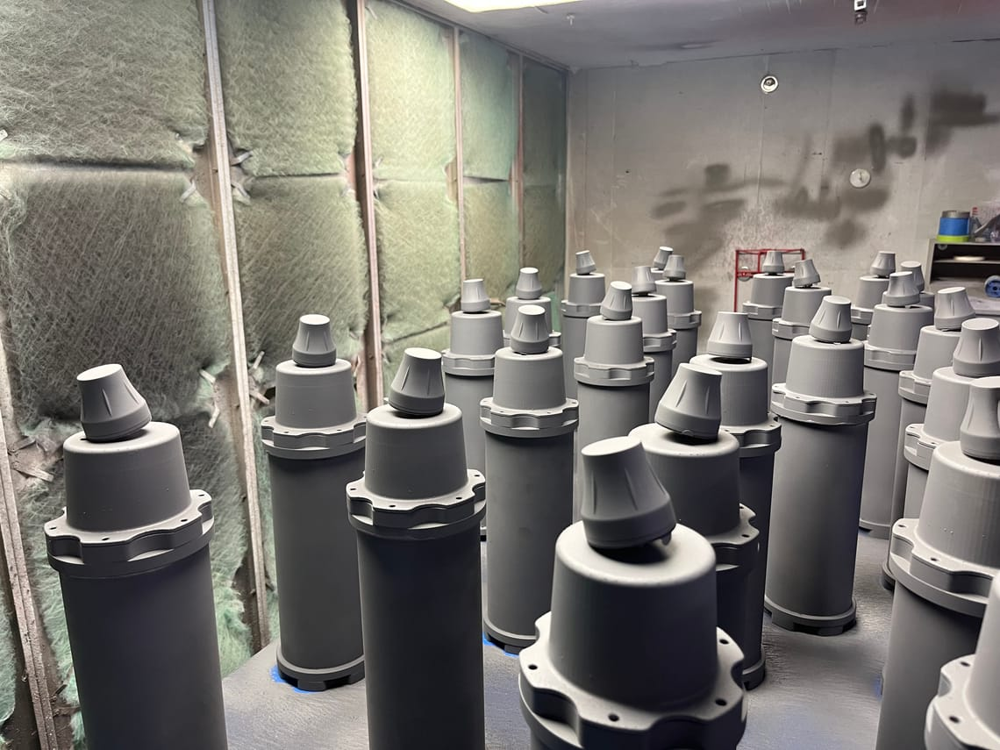</p></figure>
<figure class="ph"><p>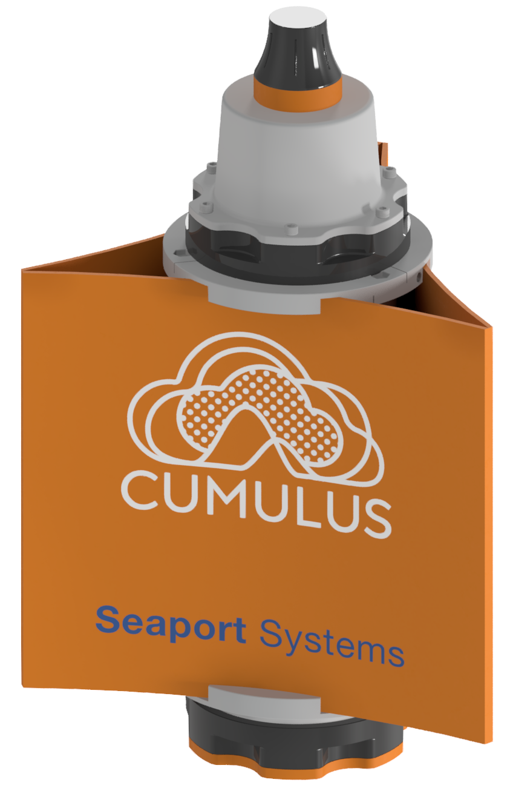</p></figure>
<figure class="ph"><p>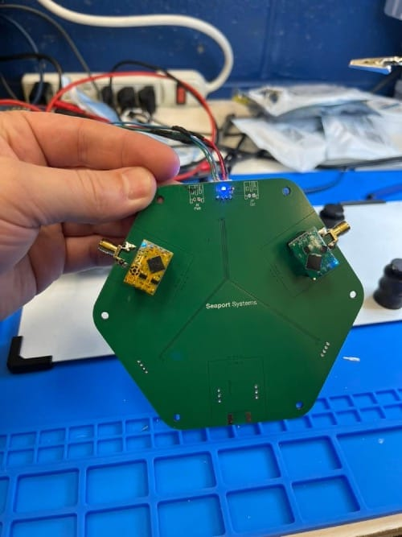</p></figure>
</div>
---
## Saeed Arida (NuVu / NuVuX)
**Founder & Chief Excitement Officer, NuVu Studio**
**Co-founder, NuVu High School & NuVuX**
Saeed Arida is the founder and Chief Excitement Officer of [NuVu Studio](https://cambridge.nuvustudio.com/), as well as co-founder of NuVu High School and NuVuX. Holding a PhD in Design Computation from MIT, his research explores creativity and pedagogy, inspiring project-based learning models. He promotes studio-based education for K-12, collaborating globally to incorporate fabrication, design, and systems thinking into school curricula.
<div class="grid">
<figure class="ph"><p>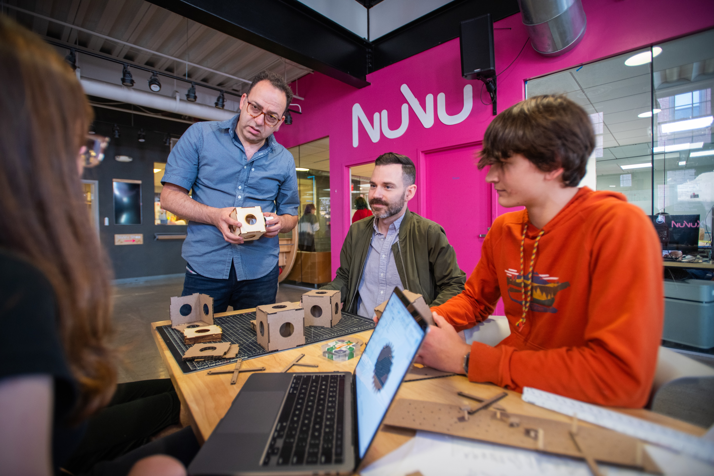</p></figure>
<figure class="ph"><p>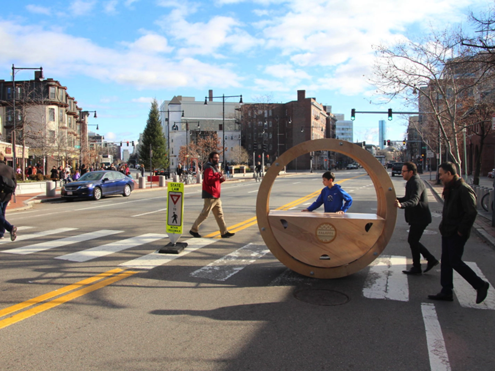</p></figure>
<figure class="ph"><p>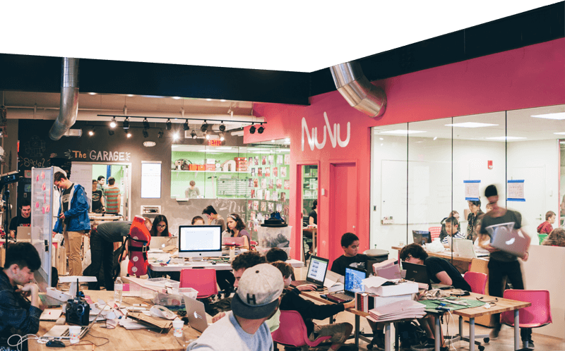</p></figure>
<figure class="ph"><p>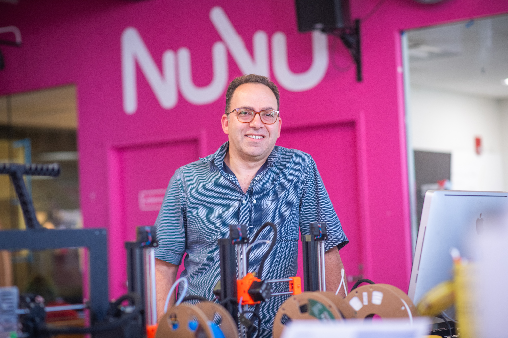</p></figure>
</div>
---
## [Fabian Almazan (Biophilia Records)](https://biophiliarecords.com/about/)
**Pianist / Composer; Founder & Director, Biophilia Records**
Fabian Almazan is a Havana-born pianist and composer. Inspired by E.O. Wilson's biophilia concept, he founded Biophilia Records in 2011 to connect music with environmental action. The label features imaginative music through low-impact releases and partnerships with conservation organizations to inspire audiences and future generations.
---
## [Betsy & Mike Jasper (Tarkka)](https://www.autodesk.com/design-make/articles/distributed-manufacturing)
**Founders, Tarkka**
Betsy and Mike Jasper are co-founders of [Tarkka](https://www.youtube.com/tarkka), a Boston-based firm democratizing manufacturing for small businesses. As mechanical engineers, they create modular CNC platforms and educational resources to lower barriers in cost, time, and expertise. They emphasize distributed manufacturing to enable personalization and low-volume production through accessible tools and training.
<div class="grid">
<figure class="ph"><p>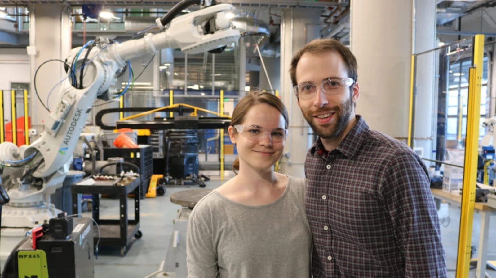</p></figure>
<figure class="ph"><p>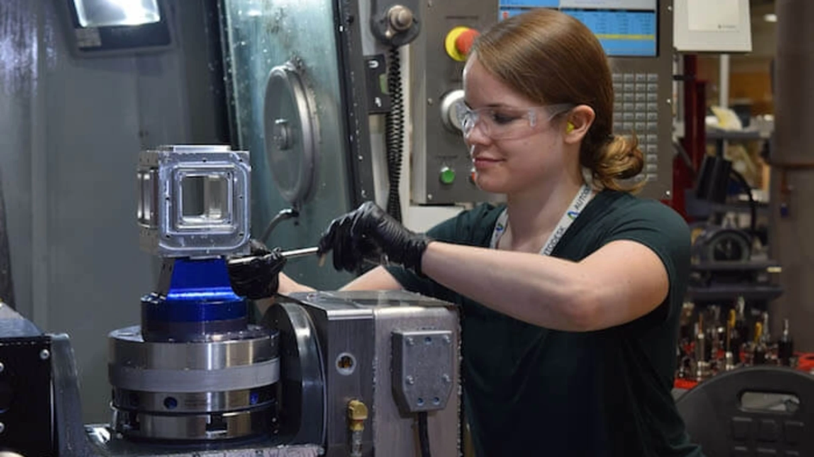</p></figure>
<figure class="ph"><p>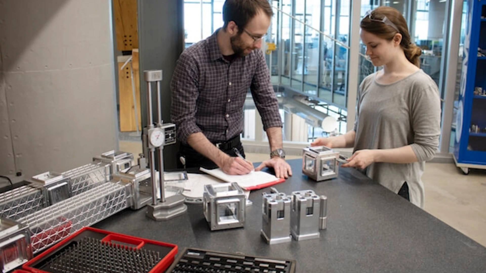</p></figure>
<figure class="ph"><p>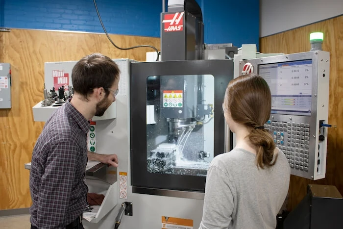</p></figure>
</div>
---
## [Leo McElroy](https://leomcelroy.com)
**Designer / Engineer / Educator**
Leo McElroy is an independent technologist and maker who founded the makerspace at Middlebury College during his studies. He develops technologies to facilitate making and comprehension, including numerous open-source digital fabrication projects and learning community systems.
<div class="grid">
<figure class="ph"><p>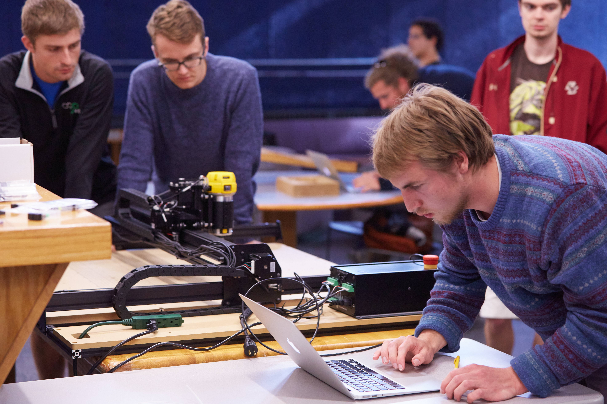</p></figure>
<figure class="ph"><p>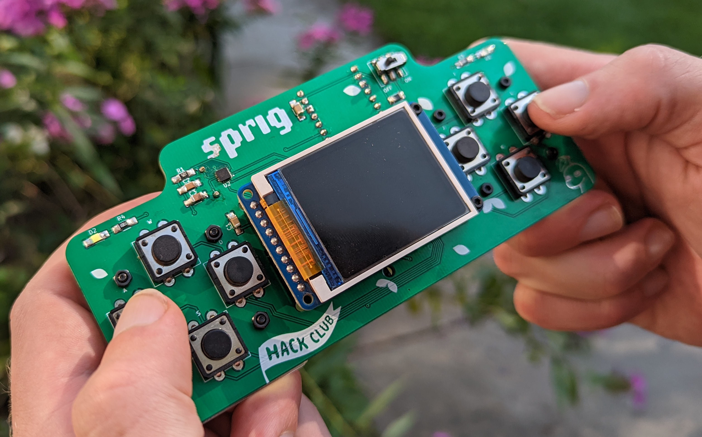</p></figure>
<figure class="ph"><p>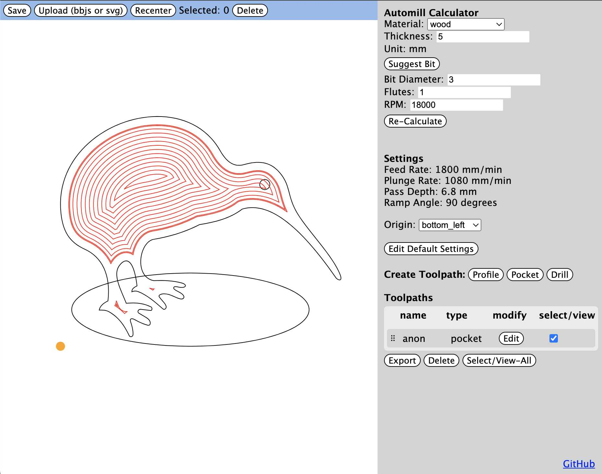</p></figure>
<figure class="ph"><p>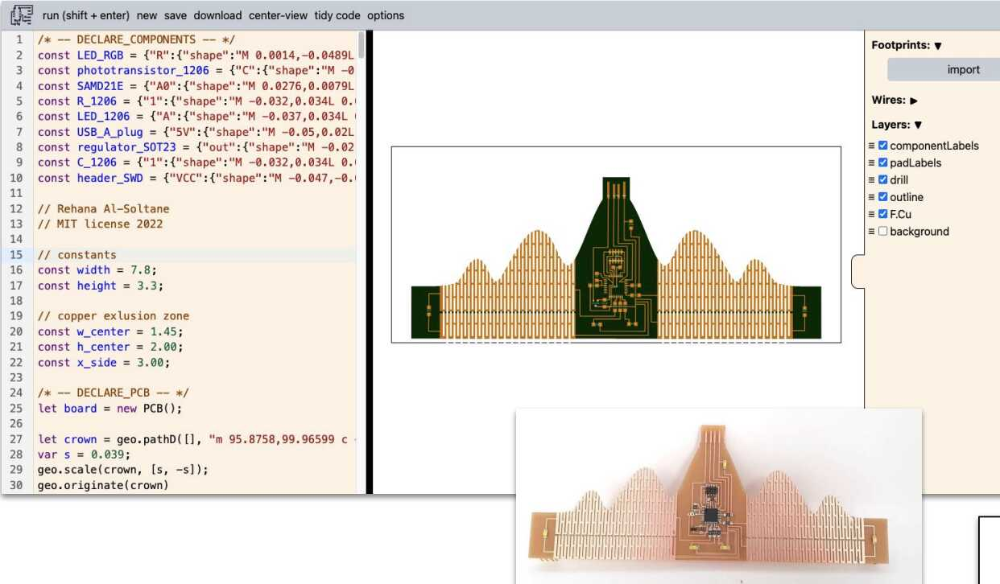</p></figure>
</div>